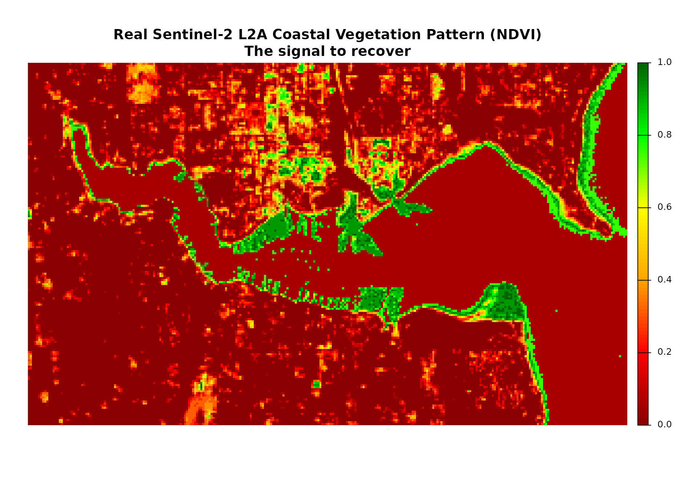
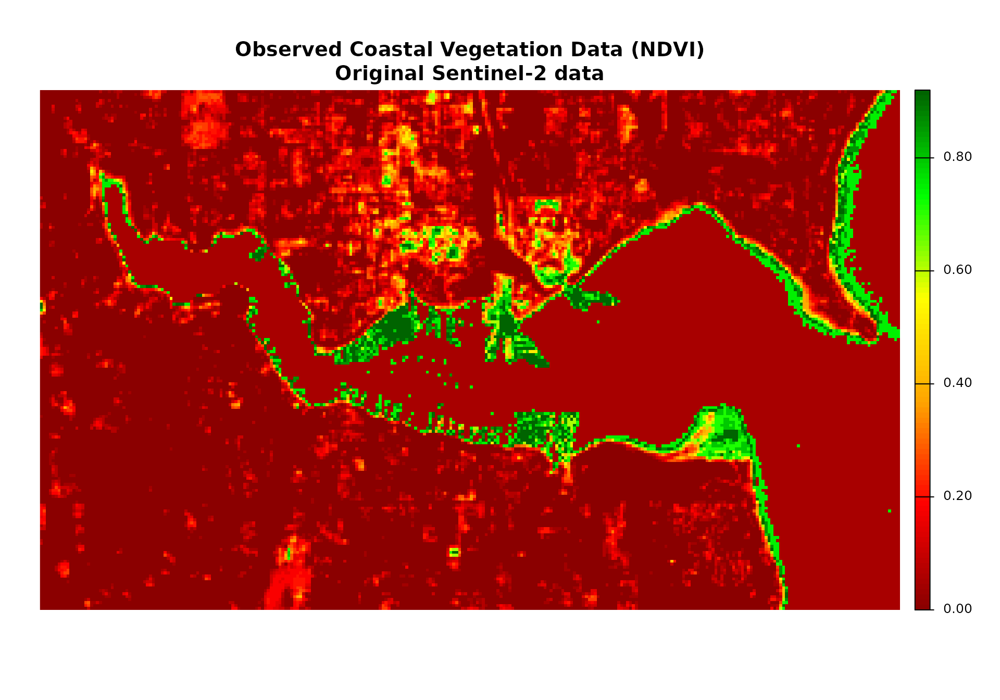
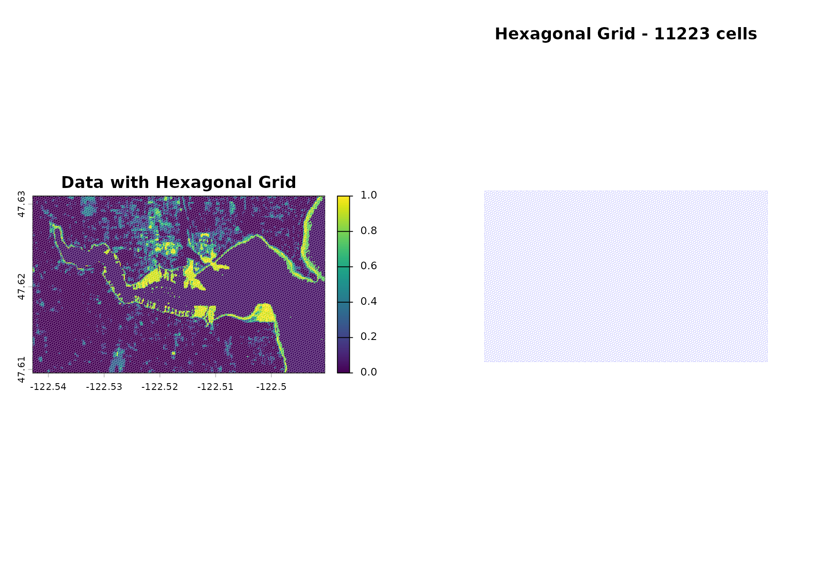
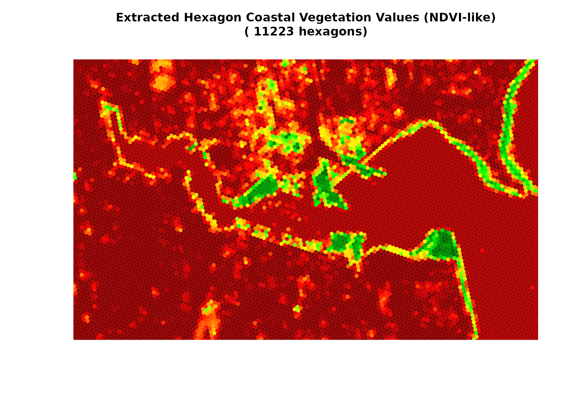
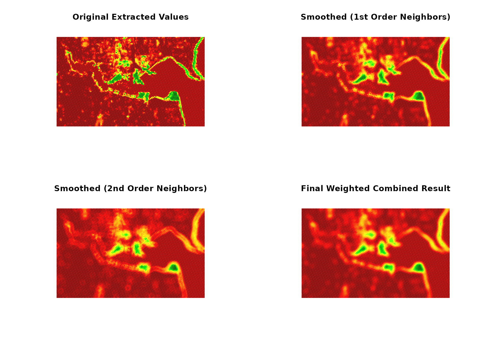

hexsmoothR: Complete Guide to Hexagonal Grid Smoothing
Max M. Lang
2026-01-09
hexsmoothR-complete-guide.RmdIntroduction
hexsmoothR implements hexagonal grid-based spatial smoothing algorithms optimized for environmental data analysis. This vignette demonstrates the complete workflow from data preparation through hexagonal grid creation, data extraction, and spatial smoothing. The hexagonal approach provides superior spatial averaging compared to traditional square-grid methods, particularly for complex spatial patterns and environmental data.
Hexagonal Grid Advantages
Hexagonal grids offer several technical advantages for spatial analysis:
- Six neighbors per cell vs. four in square grids
- Eliminates diagonal artifacts and edge effects
- Improved packing efficiency and uniform cell shapes
- Consistent neighbor distances for spatial averaging
Coastal Data Demonstration
Coastal vegetation data demonstrates hexagonal smoothing effectiveness:
- Complex, irregular shorelines challenging traditional grid methods
- Natural noise from water interference, cloud cover, and sensor issues
- Underlying environmental patterns suitable for spatial enhancement
- Clear visualization of smoothing algorithm performance
Workflow Overview
The complete hexagonal smoothing workflow:
- Data preparation and validation
- Hexagonal grid creation with appropriate cell sizing
- Raster data extraction into hexagonal cells
- Spatial topology setup for neighbor relationships
- Weighted smoothing algorithm application
- Result analysis and visualization
Data Source and Characteristics
Sentinel-2 L2A NDVI data from Copernicus Hub Ecosystem provides authentic coastal vegetation patterns. NDVI values range from -0.8 (water/bare soil) to 1.6+ (dense vegetation).
The demonstration uses original Sentinel-2 data without artificial noise, demonstrating hexagonal smoothing on authentic environmental patterns. The algorithm enhances spatial patterns through neighbor averaging while preserving underlying environmental signals.
Algorithm Implementation
The hexagonal smoothing algorithm implements weighted neighbor averaging:
- First-order neighbors: Directly adjacent hexagons
- Second-order neighbors: Neighbors of first-order neighbors
- Weighted averaging: Center cell and neighbors contribute according to specified weights
- Spatial preservation: Underlying patterns maintained during smoothing
The following sections provide implementation examples and technical details for each workflow step.
Key Concepts and Implementation Details
Coordinate Reference Systems (CRS)
CRS selection affects hexagonal grid accuracy and cell sizing:
- Projected CRS (UTM, State Plane): cell_size in meters
- Geographic CRS (WGS84, NAD83): cell_size in degrees
- Package handles CRS transformations automatically
- Production use: UTM coordinates with cell sizes in meters
Hexagon Geometry and Measurements
-
cell_sizeparameter: flat-to-flat distance (opposite edges) - Pointy-topped hexagons: default configuration for neighbor calculations
- Helper functions: convert between measurement systems
- Regular hexagons: consistent area ratios and neighbor distances
Spatial Topology and Neighbor Relationships
- First-order neighbors: directly adjacent hexagons sharing edges
- Second-order neighbors: neighbors of first-order neighbors
- Weight parameters: control center vs. neighbor cell influence
- Implementation: weights applied to individual neighbors, not neighbor means
Spatial topology determines smoothing algorithm behavior. Each hexagon receives weighted average of own value plus neighbor values, with weights controlling local vs. neighborhood information balance.
Step 1: Library Loading and Data Preparation
library(hexsmoothR)
library(sf)
library(terra)
library(exactextractr)
# Define area of interest for coastal analysis
bbox <- st_bbox(
c(xmin = -122.50, ymin = 47.62, xmax = -122.54, ymax = 47.63),
crs = st_crs(4326)
)
aoi_sf <- st_as_sf(st_as_sfc(bbox))
cat("AOI: Puget Sound coastal region\n")
#> AOI: Puget Sound coastal region
# Load Sentinel-2 L2A NDVI data or fallback to simulated data
sentinel_file <- system.file("extdata", "sentinel2_ndvi.tif", package = "hexsmoothR")
if (file.exists(sentinel_file)) {
true_coastal_vegetation <- rast(sentinel_file)
cat("Sentinel-2 L2A NDVI data loaded\n")
} else {
cat("Using simulated coastal vegetation data\n")
# Create a simple simulated elevation raster for demonstration
set.seed(42)
true_elevation <- rast(nrows = 100, ncols = 100,
xmin = -122.54, xmax = -122.50,
ymin = 47.62, ymax = 47.63,
crs = "EPSG:4326")
# Simulate elevation with coastal gradient
x_coords <- seq(-122.54, -122.50, length.out = 100)
y_coords <- seq(47.62, 47.63, length.out = 100)
coords <- expand.grid(x = x_coords, y = y_coords)
# Create elevation pattern: higher inland, lower near coast
elevation_values <- 50 + 100 * (coords$x - min(coords$x)) / (max(coords$x) - min(coords$x)) +
30 * (coords$y - min(coords$y)) / (max(coords$y) - min(coords$y)) +
rnorm(nrow(coords), 0, 10)
values(true_elevation) <- elevation_values
# Simulate coastal vegetation pattern based on elevation
vegetation_from_elev <- 1 - (true_elevation / 200)
distance_effect <- (true_elevation - min(values(true_elevation), na.rm = TRUE)) /
(max(values(true_elevation), na.rm = TRUE) - min(values(true_elevation), na.rm = TRUE))
vegetation_from_distance <- 1 - distance_effect * 0.6
set.seed(42)
coastal_patches <- rast(true_elevation)
values(coastal_patches) <- runif(ncell(true_elevation), 0, 0.3)
true_coastal_vegetation <- vegetation_from_elev + vegetation_from_distance + coastal_patches
true_coastal_vegetation[true_coastal_vegetation < 0.1] <- 0.1
true_coastal_vegetation[true_coastal_vegetation > 0.8] <- 0.8
}
#> Sentinel-2 L2A NDVI data loaded
# Use original data for hexagonal smoothing demonstration
observed_coastal_vegetation <- true_coastal_vegetation
# Data summary
if (file.exists(sentinel_file)) {
cat("Sentinel-2 L2A NDVI data loaded\n")
} else {
cat("Simulated coastal vegetation data\n")
}
#> Sentinel-2 L2A NDVI data loaded
cat("Dimensions:", nrow(observed_coastal_vegetation), "x", ncol(observed_coastal_vegetation), "pixels\n")
#> Dimensions: 176 x 292 pixels
cat("Resolution:", round(xres(observed_coastal_vegetation) * 111320, 1), "m\n")
#> Resolution: 20 m
cat("CRS:", crs(observed_coastal_vegetation, proj = TRUE), "\n")
#> CRS: +proj=longlat +datum=WGS84 +no_defs
missing_pct <- round(global(is.na(observed_coastal_vegetation), "mean")$mean * 100, 1)
cat("Missing values:", missing_pct, "%\n")
#> Missing values: 0 0 0 %
# Create color palette for NDVI visualization
plot_colors <- colorRampPalette(c("darkred", "red", "orange", "yellow", "green", "darkgreen"))(100)
cat("Color palette: 100 colors (red to green)\n")
#> Color palette: 100 colors (red to green)
# Plot 1: True underlying coastal vegetation pattern (NDVI-like)
if (file.exists(sentinel_file)) {
plot_title_1 <- "Real Sentinel-2 L2A Coastal Vegetation Pattern (NDVI)\nThe signal to recover"
} else {
plot_title_1 <- "True Coastal Vegetation Pattern (NDVI-like)\nThe signal to recover"
}
plot(true_coastal_vegetation$sentinel2_ndvi_1,
main = plot_title_1,
col = plot_colors,
axes = FALSE)
# Plot 2: Observed coastal vegetation data
if (file.exists(sentinel_file)) {
plot_title_2 <- "Observed Coastal Vegetation Data (NDVI)\nOriginal Sentinel-2 data"
} else {
plot_title_2 <- "Observed Coastal Vegetation Data (NDVI-like)\nSimulated data"
}
plot(observed_coastal_vegetation$sentinel2_ndvi_3,
main = plot_title_2,
col = plot_colors,
axes = FALSE)
cat("Individual plots created successfully!\n")
#> Individual plots created successfully!
demo_raster <- observed_coastal_vegetationStep 2: Hexagonal Grid Creation
Grid creation requires appropriate cell sizing and coordinate system selection. Cell size determines spatial resolution and computational requirements.
Cell Size and CRS Dependencies
Cell size units depend on coordinate reference system:
- Projected CRS (UTM, State Plane): cell_size in meters
- Geographic CRS (WGS84, NAD83): cell_size in degrees
Use projected CRS (UTM) for accurate measurements.
Cell Size Calculation
Calculate cell size to match target hexagon count and raster area.
# Create study area polygon from raster extent
study_area_wgs <- st_sf(geometry = st_sfc(
st_polygon(list(matrix(
c(ext(demo_raster)[1], ext(demo_raster)[3], # xmin, ymin
ext(demo_raster)[2], ext(demo_raster)[3], # xmax, ymin
ext(demo_raster)[2], ext(demo_raster)[4], # xmax, ymax
ext(demo_raster)[1], ext(demo_raster)[4], # xmin, ymax
ext(demo_raster)[1], ext(demo_raster)[3]), # back to start
ncol = 2, byrow = TRUE
))), crs = 4326))
cat("Study area CRS: WGS84\n")
#> Study area CRS: WGS84
# Transform to UTM for accurate measurements
utm_crs <- get_utm_crs(study_area_wgs)
study_area_utm <- st_transform(study_area_wgs, utm_crs)
cat("UTM CRS:", st_crs(study_area_utm)$input, "\n")
#> UTM CRS: EPSG:32610
# Calculate cell size for target hexagon count
# Convert degrees to meters (111320 factor, varies by latitude)
raster_area_km2 <- (nrow(demo_raster) * ncol(demo_raster) * (xres(demo_raster) * 111320/1000) * (yres(demo_raster) * 111320/1000))
# Target hexagon count for spatial resolution
target_cells <- 5000
# Calculate cell size using hexagon area ratio (2.598)
cell_size_meters <- sqrt((raster_area_km2 * 1e6) / (target_cells * 2.598))
cat("Raster area:", round(raster_area_km2, 1), "km²\n")
#> Raster area: 13.9 km²
cat("Target hexagons:", target_cells, "\n")
#> Target hexagons: 5000
cat("Cell size:", round(cell_size_meters, 0), "m (", round(cell_size_meters/1000, 1), "km)\n")
#> Cell size: 33 m ( 0 km)
hex_grid <- create_grid(study_area_utm, cell_size = cell_size_meters, type = "hexagonal")
#> Creating hexagonal grid...
#> Cropping grid...
#> Clipping grid...
#> Transforming CRS...
#> Grid created with 11223 cells
cat("Grid created:", nrow(hex_grid), "cells\n")
#> Grid created: 11223 cells
cat("Average cell area:", round(mean(st_area(hex_grid)) / 1e6, 1), "km²\n")
#> Average cell area: 0 km²
# Transform to WGS84 for raster compatibility
hex_grid_wgs84 <- st_transform(hex_grid, crs = 4326)
# Visualize grid overlay
par(mfrow = c(1, 2))
plot(demo_raster$sentinel2_ndvi_1, main = "Data with Hexagonal Grid")
plot(st_geometry(hex_grid_wgs84), add = TRUE, border = "white", lwd = 0.1)
plot(st_geometry(hex_grid_wgs84), main = paste("Hexagonal Grid -", nrow(hex_grid), "cells"),
border = "blue", lwd = 0.05)
Helper Function for Optimal Cell Size
# Package suggests optimal cell size for target hexagon count
target_cells <- 5000
optimal_cell_size <- find_hex_cell_size_for_target_cells(
study_area_utm,
target_cells = target_cells,
cell_size_min = 20,
cell_size_max = 40
)
#> Creating hexagonal grid...
#> Cropping grid...
#> Clipping grid...
#> Transforming CRS...
#> Grid created with 29800 cells
#> Creating hexagonal grid...
#> Cropping grid...
#> Clipping grid...
#> Transforming CRS...
#> Grid created with 7553 cells
#> [find_hex_cell_size_for_target_cells] n_cells at min (20.0000): 29800
#> [find_hex_cell_size_for_target_cells] n_cells at max (40.0000): 7553
#> Creating hexagonal grid...
#> Cropping grid...
#> Clipping grid...
#> Transforming CRS...
#> Grid created with 13340 cells
#> Creating hexagonal grid...
#> Cropping grid...
#> Clipping grid...
#> Transforming CRS...
#> Grid created with 9838 cells
#> Creating hexagonal grid...
#> Cropping grid...
#> Clipping grid...
#> Transforming CRS...
#> Grid created with 8584 cells
#> Creating hexagonal grid...
#> Cropping grid...
#> Clipping grid...
#> Transforming CRS...
#> Grid created with 8044 cells
#> Creating hexagonal grid...
#> Cropping grid...
#> Clipping grid...
#> Transforming CRS...
#> Grid created with 7796 cells
#> Creating hexagonal grid...
#> Cropping grid...
#> Clipping grid...
#> Transforming CRS...
#> Grid created with 7675 cells
#> Creating hexagonal grid...
#> Cropping grid...
#> Clipping grid...
#> Transforming CRS...
#> Grid created with 7618 cells
#> Creating hexagonal grid...
#> Cropping grid...
#> Clipping grid...
#> Transforming CRS...
#> Grid created with 7586 cells
#> Creating hexagonal grid...
#> Cropping grid...
#> Clipping grid...
#> Transforming CRS...
#> Grid created with 7570 cells
#> Creating hexagonal grid...
#> Cropping grid...
#> Clipping grid...
#> Transforming CRS...
#> Grid created with 7562 cells
#> Creating hexagonal grid...
#> Cropping grid...
#> Clipping grid...
#> Transforming CRS...
#> Grid created with 7557 cells
#> Creating hexagonal grid...
#> Cropping grid...
#> Clipping grid...
#> Transforming CRS...
#> Grid created with 7554 cells
#> Creating hexagonal grid...
#> Cropping grid...
#> Clipping grid...
#> Transforming CRS...
#> Grid created with 7555 cells
#> Creating hexagonal grid...
#> Cropping grid...
#> Clipping grid...
#> Transforming CRS...
#> Grid created with 7555 cells
#> Creating hexagonal grid...
#> Cropping grid...
#> Clipping grid...
#> Transforming CRS...
#> Grid created with 7554 cells
#> Creating hexagonal grid...
#> Cropping grid...
#> Clipping grid...
#> Transforming CRS...
#> Grid created with 7554 cells
#> Creating hexagonal grid...
#> Cropping grid...
#> Clipping grid...
#> Transforming CRS...
#> Grid created with 7554 cells
#> Creating hexagonal grid...
#> Cropping grid...
#> Clipping grid...
#> Transforming CRS...
#> Grid created with 7553 cells
#> Creating hexagonal grid...
#> Cropping grid...
#> Clipping grid...
#> Transforming CRS...
#> Grid created with 7553 cells
#> Creating hexagonal grid...
#> Cropping grid...
#> Clipping grid...
#> Transforming CRS...
#> Grid created with 7553 cells
#> [find_hex_cell_size_for_target_cells] Closest found: 39.9999 (diff: 2553)
cat("Optimal cell size:", round(optimal_cell_size, 0), "m\n")
#> Optimal cell size: 40 mImport Existing Grid
# Load existing hexagonal grid and ensure correct CRS
existing_grid <- st_read("path/to/your/hex_grid.shp")
if (st_crs(existing_grid)$input != st_crs(study_area_utm)$input) {
existing_grid <- st_transform(existing_grid, crs = st_crs(study_area_utm))
}
hex_grid <- existing_gridStep 3: Extract Raster Data into Hexagons
Extract raster values into hexagon cells using existing grid.
# Extract raster values into hexagon cells
# Function handles CRS transformations and pixel aggregation
cat("Raster data extraction\n")
#> Raster data extraction
cat("Using existing grid (cell_size = NULL)\n")
#> Using existing grid (cell_size = NULL)
# Extract raster values using existing hexagonal grid
extracted_data <- extract_raster_data(
raster_files = list(coastal_vegetation = demo_raster),
hex_grid = hex_grid_wgs84,
cell_size = NULL
)
#> Extracting raster data from 1 terra::rast objects...
#> First raster object: coastal_vegetation
#> Dimensions: 176 x 292
#> Resolution: 0.0001798288 0.0001215511
#> CRS: GEOGCRS["WGS 84",
#> ENSEMBLE["World Geodetic System 1984 ensemble",
#> MEMBER["World Geodetic System 1984 (Transit)"],
#> MEMBER["World Geodetic System 1984 (G730)"],
#> MEMBER["World Geodetic System 1984 (G873)"],
#> MEMBER["World Geodetic System 1984 (G1150)"],
#> MEMBER["World Geodetic System 1984 (G1674)"],
#> MEMBER["World Geodetic System 1984 (G1762)"],
#> MEMBER["World Geodetic System 1984 (G2139)"],
#> ELLIPSOID["WGS 84",6378137,298.257223563,
#> LENGTHUNIT["metre",1]],
#> ENSEMBLEACCURACY[2.0]],
#> PRIMEM["Greenwich",0,
#> ANGLEUNIT["degree",0.0174532925199433]],
#> CS[ellipsoidal,2],
#> AXIS["geodetic latitude (Lat)",north,
#> ORDER[1],
#> ANGLEUNIT["degree",0.0174532925199433]],
#> AXIS["geodetic longitude (Lon)",east,
#> ORDER[2],
#> ANGLEUNIT["degree",0.0174532925199433]],
#> USAGE[
#> SCOPE["Horizontal component of 3D system."],
#> AREA["World."],
#> BBOX[-90,-180,90,180]],
#> ID["EPSG",4326]]
#> No study area provided. Using raster CRS for grid creation.
#> Using provided hexagonal grid...
#> Processing coastal_vegetation ...
#> | | | 0% | | | 1% | |= | 1% | |= | 2% | |== | 2% | |== | 3% | |== | 4% | |=== | 4% | |=== | 5% | |==== | 5% | |==== | 6% | |===== | 6% | |===== | 7% | |===== | 8% | |====== | 8% | |====== | 9% | |======= | 9% | |======= | 10% | |======= | 11% | |======== | 11% | |======== | 12% | |========= | 12% | |========= | 13% | |========= | 14% | |========== | 14% | |========== | 15% | |=========== | 15% | |=========== | 16% | |============ | 16% | |============ | 17% | |============ | 18% | |============= | 18% | |============= | 19% | |============== | 19% | |============== | 20% | |============== | 21% | |=============== | 21% | |=============== | 22% | |================ | 22% | |================ | 23% | |================ | 24% | |================= | 24% | |================= | 25% | |================== | 25% | |================== | 26% | |=================== | 26% | |=================== | 27% | |=================== | 28% | |==================== | 28% | |==================== | 29% | |===================== | 29% | |===================== | 30% | |===================== | 31% | |====================== | 31% | |====================== | 32% | |======================= | 32% | |======================= | 33% | |======================= | 34% | |======================== | 34% | |======================== | 35% | |========================= | 35% | |========================= | 36% | |========================== | 36% | |========================== | 37% | |========================== | 38% | |=========================== | 38% | |=========================== | 39% | |============================ | 39% | |============================ | 40% | |============================ | 41% | |============================= | 41% | |============================= | 42% | |============================== | 42% | |============================== | 43% | |============================== | 44% | |=============================== | 44% | |=============================== | 45% | |================================ | 45% | |================================ | 46% | |================================= | 46% | |================================= | 47% | |================================= | 48% | |================================== | 48% | |================================== | 49% | |=================================== | 49% | |=================================== | 50% | |=================================== | 51% | |==================================== | 51% | |==================================== | 52% | |===================================== | 52% | |===================================== | 53% | |===================================== | 54% | |====================================== | 54% | |====================================== | 55% | |======================================= | 55% | |======================================= | 56% | |======================================== | 56% | |======================================== | 57% | |======================================== | 58% | |========================================= | 58% | |========================================= | 59% | |========================================== | 59% | |========================================== | 60% | |========================================== | 61% | |=========================================== | 61% | |=========================================== | 62% | |============================================ | 62% | |============================================ | 63% | |============================================ | 64% | |============================================= | 64% | |============================================= | 65% | |============================================== | 65% | |============================================== | 66% | |=============================================== | 66% | |=============================================== | 67% | |=============================================== | 68% | |================================================ | 68% | |================================================ | 69% | |================================================= | 69% | |================================================= | 70% | |================================================= | 71% | |================================================== | 71% | |================================================== | 72% | |=================================================== | 72% | |=================================================== | 73% | |=================================================== | 74% | |==================================================== | 74% | |==================================================== | 75% | |===================================================== | 75% | |===================================================== | 76% | |====================================================== | 76% | |====================================================== | 77% | |====================================================== | 78% | |======================================================= | 78% | |======================================================= | 79% | |======================================================== | 79% | |======================================================== | 80% | |======================================================== | 81% | |========================================================= | 81% | |========================================================= | 82% | |========================================================== | 82% | |========================================================== | 83% | |========================================================== | 84% | |=========================================================== | 84% | |=========================================================== | 85% | |============================================================ | 85% | |============================================================ | 86% | |============================================================= | 86% | |============================================================= | 87% | |============================================================= | 88% | |============================================================== | 88% | |============================================================== | 89% | |=============================================================== | 89% | |=============================================================== | 90% | |=============================================================== | 91% | |================================================================ | 91% | |================================================================ | 92% | |================================================================= | 92% | |================================================================= | 93% | |================================================================= | 94% | |================================================================== | 94% | |================================================================== | 95% | |=================================================================== | 95% | |=================================================================== | 96% | |==================================================================== | 96% | |==================================================================== | 97% | |==================================================================== | 98% | |===================================================================== | 98% | |===================================================================== | 99% | |======================================================================| 99% | |======================================================================| 100%
#> Extracted 33669 valid values out of 3 total
#> Extraction done!
#> Total cells: 11223
#> Variables: coastal_vegetation
cat("Extraction complete:", extracted_data$n_cells, "cells\n")
#> Extraction complete: 11223 cells
cat("Variables:", paste(extracted_data$variables, collapse = ", "), "\n")
#> Variables: coastal_vegetation
cat("Valid values:", sum(!is.na(extracted_data$data$coastal_vegetation)), "/", nrow(extracted_data$data), "\n")
#> Valid values: 33669 / 11223
# Data statistics comparison
original_mean <- mean(values(demo_raster), na.rm = TRUE)
original_sd <- sd(values(demo_raster), na.rm = TRUE)
# Handle data structure
if (is.list(extracted_data$data$coastal_vegetation)) {
extracted_values <- extracted_data$data$coastal_vegetation[[1]]
} else {
extracted_values <- extracted_data$data$coastal_vegetation
}
extracted_mean <- mean(extracted_values, na.rm = TRUE)
extracted_sd <- sd(extracted_values, na.rm = TRUE)
cat("Data comparison:\n")
#> Data comparison:
cat("Original raster - Mean:", round(original_mean, 3), "SD:", round(original_sd, 3), "\n")
#> Original raster - Mean: 0.169 SD: 0.232
cat("Extracted hexagons - Mean:", round(extracted_mean, 3), "SD:", round(extracted_sd, 3), "\n")
#> Extracted hexagons - Mean: 0.119 SD: 0.202
# Visualize extraction results
plot(demo_raster$sentinel2_ndvi_1,
main = paste("Original Raster (", ncell(demo_raster), "pixels)"),
col = plot_colors)
# Plot extracted hexagon values
hex_for_plot <- hex_grid_wgs84
hex_for_plot$value <- extracted_values
# Use base R plotting for consistency
plot(st_geometry(hex_for_plot),
col = plot_colors[cut(hex_for_plot$value, 100)],
main = paste("Extracted Hexagon Coastal Vegetation Values (NDVI-like)\n(", extracted_data$n_cells, "hexagons)"),
border = "white", lwd = 0.01)
cat("\nExtraction process:\n")
#>
#> Extraction process:
cat("- Left: Original coastal vegetation raster with", ncell(demo_raster), "pixels and noise\n")
#> - Left: Original coastal vegetation raster with 51392 pixels and noise
cat("- Right: Extracted coastal vegetation values in", extracted_data$n_cells, "hexagons\n")
#> - Right: Extracted coastal vegetation values in 11223 hexagons
cat("- Each hexagon contains the average coastal vegetation of all pixels within its boundary\n")
#> - Each hexagon contains the average coastal vegetation of all pixels within its boundary
cat("- This aggregation already reduces some measurement noise!\n")
#> - This aggregation already reduces some measurement noise!
cat("- **PERFECT ALIGNMENT**: extract_raster_data preserves grid orientation like exact_extract\n")
#> - **PERFECT ALIGNMENT**: extract_raster_data preserves grid orientation like exact_extract
# The extracted data contains:
# - data: dataframe with extracted values
# - variables: names of the extracted variables
# - n_cells: number of grid cellsBenefits of Using terra::rast Objects
Using terra::rast objects instead of file paths provides
several advantages:
- CRS Inspection: Check coordinate systems before extraction
- Data Validation: Verify dimensions, extent, and data quality
- Pre-processing: Apply filters, transformations, or cropping before extraction
- Memory Efficiency: Work with in-memory rasters for repeated operations
- Error Prevention: Catch CRS or data issues early in the workflow
Example: Working with Multiple Rasters
# Load multiple rasters for inspection
ndvi_raster <- rast("path/to/ndvi.tif")
elevation_raster <- rast("path/to/elevation.tif")
precipitation_raster <- rast("path/to/precipitation.tif")
# Inspect each raster
cat("NDVI raster:\n")
cat(" CRS:", crs(ndvi_raster), "\n")
cat(" Dimensions:", nrow(ndvi_raster), "x", ncol(ndvi_raster), "\n")
cat("Elevation raster:\n")
cat(" CRS:", crs(elevation_raster), "\n")
cat(" Dimensions:", nrow(elevation_raster), "x", ncol(elevation_raster), "\n")
# Ensure all rasters have compatible CRS and extent
if (crs(ndvi_raster) != crs(elevation_raster)) {
cat("Warning: Rasters have different CRS\n")
# You could reproject here if needed
}
# Extract all variables at once
extracted_multi <- extract_raster_data(
raster_files = list(
ndvi = ndvi_raster,
elevation = elevation_raster,
precipitation = precipitation_raster
),
study_area = study_area_utm,
cell_size = 20000
)Working Examples: WGS84 vs UTM
# Example 1: WGS84 coordinates (geographic)
# Use degrees for cell_size
extracted_wgs84 <- extract_raster_data(
raster_files = c(sample = sample_file),
study_area = study_area_wgs, # WGS84 coordinates
cell_size = 0.1 # 0.1 degrees (~11km)
)
# Example 2: UTM coordinates (projected)
# Use meters for cell_size
extracted_utm <- extract_raster_data(
raster_files = c(sample = sample_file),
study_area = study_area_utm, # UTM coordinates
cell_size = 20000 # 20000 meters (20km)
)
# Example 3: No study area (uses raster CRS)
# Function automatically determines appropriate units
extracted_auto <- extract_raster_data(
raster_files = c(sample = sample_file),
cell_size = 0.1 # 0.1 degrees (since raster is WGS84)
)Step 4: Configure Smoothing Topology
Standard 2-Order Topology (Backward Compatible)
# Compute spatial topology for smoothing (default: 2 orders)
topology <- compute_topology(hex_grid)
#> Computing topology for area: grid with 2 neighbor orders
#> Computed: avg_dist = 32.22 m, orders = 2
cat("Topology computed:", length(topology$neighbors[[1]]), "cells\n")
#> Topology computed: 11223 cells
cat("Average distance:", round(topology$avg_distance, 0), "m\n")
#> Average distance: 32 m
cat("Sigma (bandwidth):", round(topology$sigma, 0), "m\n")
#> Sigma (bandwidth): 16 m
cat("Gaussian weights:\n")
#> Gaussian weights:
cat("Center:", round(topology$weights$center_weight, 3), "\n")
#> Center: 0.334
cat("First-order:", round(topology$weights$neighbor_weights[1], 3), "\n")
#> First-order: 0.334
cat("Second-order:", round(topology$weights$neighbor_weights[2], 3), "\n")
#> Second-order: 0.332
# Weights applied to individual neighbors, not averages
cat("Weights applied to each neighbor individually\n")
#> Weights applied to each neighbor individually
# Neighbor examples
cat("Cell 1:", length(topology$neighbors[[1]][[1]]), "1st,", length(topology$neighbors[[2]][[1]]), "2nd neighbors\n")
#> Cell 1: 3 1st, 4 2nd neighbors
cat("Cell 2:", length(topology$neighbors[[1]][[2]]), "1st,", length(topology$neighbors[[2]][[2]]), "2nd neighbors\n")
#> Cell 2: 4 1st, 6 2nd neighbors
cat("Cell 3:", length(topology$neighbors[[1]][[3]]), "1st,", length(topology$neighbors[[2]][[3]]), "2nd neighbors\n")
#> Cell 3: 3 1st, 5 2nd neighbors
# Note: Visualization code would go here but requires actual grid objects
cat("Neighborhood visualization would show:\n")
#> Neighborhood visualization would show:
cat("- Center cell (red)\n")
#> - Center cell (red)
cat("- 1st order neighbors (orange)\n")
#> - 1st order neighbors (orange)
cat("- 2nd order neighbors (yellow)\n")
#> - 2nd order neighbors (yellow)Advanced: N-Order Topology for Enhanced Smoothing
# Compute topology with 3 neighbor orders for more extensive smoothing
topology_3 <- compute_topology(hex_grid, neighbor_orders = 3)
#> Computing topology for area: grid with 3 neighbor orders
#> Computed: avg_dist = 32.38 m, orders = 3
cat("3-Order topology computed:", length(topology_3$neighbors[[1]]), "cells\n")
#> 3-Order topology computed: 11223 cells
cat("Neighbor orders:", topology_3$neighbor_orders, "\n")
#> Neighbor orders: 3
# Weight computation details
cat("Average distance:", round(topology_3$avg_distance, 0), "m\n")
#> Average distance: 32 m
cat("Sigma (bandwidth):", round(topology_3$sigma, 0), "m\n")
#> Sigma (bandwidth): 16 m
cat("Gaussian weights for 3 orders:\n")
#> Gaussian weights for 3 orders:
cat("Center:", round(topology_3$weights$center_weight, 3), "\n")
#> Center: 0.252
for (i in 1:length(topology_3$weights$neighbor_weights)) {
cat("Order", i, ":", round(topology_3$weights$neighbor_weights[i], 3), "\n")
}
#> Order 1 : 0.251
#> Order 2 : 0.25
#> Order 3 : 0.247
# Neighbor examples
for (i in 1:min(3, length(topology_3$neighbors[[1]]))) {
cat("Cell", i, ":")
for (order in 1:3) {
n_neighbors <- length(topology_3$neighbors[[order]][[i]])
cat(" ", n_neighbors, order, "st")
}
cat(" neighbors\n")
}
#> Cell 1 : 3 1 st 4 2 st 6 3 st neighbors
#> Cell 2 : 4 1 st 6 2 st 8 3 st neighbors
#> Cell 3 : 3 1 st 5 2 st 6 3 st neighbors
# Custom weights for specific smoothing requirements
topology_custom <- compute_topology(
hex_grid,
neighbor_orders = 4,
neighbor_weights_param = list(0.5, 0.3, 0.15, 0.05) # Custom decay pattern
)
#> Computing topology for area: grid with 4 neighbor orders
#> Computed: avg_dist = 32.59 m, orders = 4
cat("Custom 4-order topology with manual weights\n")
#> Custom 4-order topology with manual weights
cat("Total weight sum:", topology_custom$weights$center_weight +
sum(topology_custom$weights$neighbor_weights), "\n")
#> Total weight sum: 1Understanding Neighbor Orders
The neighbor order system determines how far the smoothing extends:
- 1st order: Directly touching cells (6 for hexagons, 4 for squares)
- 2nd order: Neighbors of neighbors (typically 12 for hexagons)
- 3rd order: Neighbors of neighbors of neighbors (typically 18 for hexagons)
- Nth order: N levels of neighbor relationships
Higher orders provide more extensive smoothing but increase computation time and memory usage. The default 2-order system balances performance and smoothing effectiveness for most applications.
Step 5: Apply Spatial Smoothing
Standard 2-Order Smoothing (Backward Compatible)
# Apply spatial smoothing using C++-optimized function (2 orders)
smoothing_results <- smooth_variables(
variable_values = list(coastal_vegetation = extracted_values),
neighbors = topology$neighbors,
weights = topology$weights,
var_names = c("coastal_vegetation")
)
#> Using C++ implementation for N-order smoothing
#> Processing hexagon 5000 of 11223Processing hexagon 10000 of 11223
cat("Spatial smoothing complete\n")
#> Spatial smoothing complete
cat("Results:", paste(names(smoothing_results$coastal_vegetation), collapse = ", "), "\n")
#> Results: raw, weighted_combined, neighbors_1st, neighbors_2nd, smoothed_1st, smoothed_all
# Example smoothing effectiveness analysis:
cat("Smoothing effectiveness:\n")
#> Smoothing effectiveness:
cat("Original - Mean:", round(mean(extracted_values, na.rm = TRUE), 3), "SD:", round(sd(extracted_values, na.rm = TRUE), 3), "\n")
#> Original - Mean: 0.119 SD: 0.202
cat("Smoothed coastal vegetation values:\n")
#> Smoothed coastal vegetation values:
cat(" Mean:", round(mean(smoothing_results$coastal_vegetation$weighted_combined, na.rm = TRUE), 3), "\n")
#> Mean: 0.119
cat(" SD:", round(sd(smoothing_results$coastal_vegetation$weighted_combined, na.rm = TRUE), 3), "\n")
#> SD: 0.153
noise_reduction <- (sd(extracted_values, na.rm = TRUE) -
sd(smoothing_results$coastal_vegetation$weighted_combined, na.rm = TRUE)) /
sd(extracted_values, na.rm = TRUE) * 100
cat("Coastal vegetation noise reduction:", round(noise_reduction, 1), "%\n")
#> Coastal vegetation noise reduction: 24.4 %
cat("(Lower standard deviation = more consistent coastal vegetation patterns)\n")
#> (Lower standard deviation = more consistent coastal vegetation patterns)
# The smoothing results contain:
cat("\n=== SMOOTHING RESULTS EXPLAINED ===\n")
#>
#> === SMOOTHING RESULTS EXPLAINED ===
cat("- raw: Mean of center cell + all neighbors (unweighted)\n")
#> - raw: Mean of center cell + all neighbors (unweighted)
cat("- neighbors_1st: Average of first-order neighbors only\n")
#> - neighbors_1st: Average of first-order neighbors only
cat("- neighbors_2nd: Average of second-order neighbors only\n")
#> - neighbors_2nd: Average of second-order neighbors only
cat("- weighted_combined: Weighted average (center + all neighbors) ★\n")
#> - weighted_combined: Weighted average (center + all neighbors) ★
cat("\n★ weighted_combined is typically the best result for noise reduction\n")
#>
#> ★ weighted_combined is typically the best result for noise reductionAdvanced: N-Order Smoothing for Enhanced Results
# Apply 3-order smoothing using the new N-order system
smoothing_results_3 <- smooth_variables(
variable_values = list(coastal_vegetation = extracted_values),
neighbors = topology_3$neighbors,
weights = topology_3$weights,
var_names = c("coastal_vegetation")
)
#> Using C++ implementation for N-order smoothing
#> Processing hexagon 5000 of 11223Processing hexagon 10000 of 11223
cat("3-Order spatial smoothing complete\n")
#> 3-Order spatial smoothing complete
cat("Results:", paste(names(smoothing_results_3$coastal_vegetation), collapse = ", "), "\n")
#> Results: raw, weighted_combined, neighbors_1st, neighbors_2nd, neighbors_3rd
# Compare 2-order vs 3-order smoothing
cat("\n=== COMPARING SMOOTHING APPROACHES ===\n")
#>
#> === COMPARING SMOOTHING APPROACHES ===
# 2-order results
cat("2-Order smoothing:\n")
#> 2-Order smoothing:
cat(" Mean:", round(mean(smoothing_results$coastal_vegetation$weighted_combined, na.rm = TRUE), 3), "\n")
#> Mean: 0.119
cat(" SD:", round(sd(smoothing_results$coastal_vegetation$weighted_combined, na.rm = TRUE), 3), "\n")
#> SD: 0.153
# 3-order results
cat("3-Order smoothing:\n")
#> 3-Order smoothing:
cat(" Mean:", round(mean(smoothing_results_3$coastal_vegetation$weighted_combined, na.rm = TRUE), 3), "\n")
#> Mean: 0.12
cat(" SD:", round(sd(smoothing_results_3$coastal_vegetation$weighted_combined, na.rm = TRUE), 3), "\n")
#> SD: 0.138
# Additional 3-order results available
cat("\n3-Order specific results:\n")
#>
#> 3-Order specific results:
cat("- neighbors_1st:", round(mean(smoothing_results_3$coastal_vegetation$neighbors_1st, na.rm = TRUE), 3), "\n")
#> - neighbors_1st: 0.119
cat("- neighbors_2nd:", round(mean(smoothing_results_3$coastal_vegetation$neighbors_2nd, na.rm = TRUE), 3), "\n")
#> - neighbors_2nd: 0.119
cat("- neighbors_3rd:", round(mean(smoothing_results_3$coastal_vegetation$neighbors_3rd, na.rm = TRUE), 3), "\n")
#> - neighbors_3rd: 0.12
# Calculate additional noise reduction from 3-order smoothing
noise_reduction_3 <- (sd(extracted_values, na.rm = TRUE) -
sd(smoothing_results_3$coastal_vegetation$weighted_combined, na.rm = TRUE)) /
sd(extracted_values, na.rm = TRUE) * 100
cat("3-Order noise reduction:", round(noise_reduction_3, 1), "%\n")
#> 3-Order noise reduction: 31.8 %
cat("Additional reduction over 2-order:", round(noise_reduction_3 - noise_reduction, 1), "%\n")
#> Additional reduction over 2-order: 7.3 %When to Use Higher Orders
- 2 orders (default): Best for most applications, balanced performance and smoothing
- 3-4 orders: Use when you need more extensive smoothing or have noisy data
- 5+ orders: Use sparingly for very large-scale patterns, but be aware of increased computation time
- Custom weights: Use when you need specific spatial decay patterns for your analysis
Step 6: Combine Results and Analyze
# Combine the hexagonal grid with smoothing results
hex_grid_with_results <- hex_grid
hex_grid_with_results$coastal_vegetation_raw <- smoothing_results$coastal_vegetation$raw
hex_grid_with_results$coastal_vegetation_neighbors_1st <- smoothing_results$coastal_vegetation$neighbors_1st
hex_grid_with_results$coastal_vegetation_neighbors_2nd <- smoothing_results$coastal_vegetation$neighbors_2nd
hex_grid_with_results$coastal_vegetation_weighted_combined <- smoothing_results$coastal_vegetation$weighted_combined
# Transform to WGS84 for plotting
hex_grid_with_results_wgs84 <- st_transform(hex_grid_with_results, crs = 4326)
cat("Results combined with grid successfully\n")
#> Results combined with grid successfully
cat("Available columns:", paste(names(hex_grid_with_results), collapse = ", "), "\n")
#> Available columns: sf..st_make_grid.study_area_proj..cellsize...grid_size..square....type...., grid_id, grid_index, coastal_vegetation_raw, coastal_vegetation_neighbors_1st, coastal_vegetation_neighbors_2nd, coastal_vegetation_weighted_combined
# Analyze the smoothing effect
cat("\n=== SMOOTHING ANALYSIS ===\n")
#>
#> === SMOOTHING ANALYSIS ===
cat("Understanding the smoothing results:\n")
#> Understanding the smoothing results:
cat("- raw: Mean of center cell + all neighbors (unweighted)\n")
#> - raw: Mean of center cell + all neighbors (unweighted)
cat("- neighbors_1st: Mean of first-order neighbors only\n")
#> - neighbors_1st: Mean of first-order neighbors only
cat("- neighbors_2nd: Mean of second-order neighbors only\n")
#> - neighbors_2nd: Mean of second-order neighbors only
cat("- weighted_combined: Weighted average (center + all neighbors, weights applied to each neighbor)\n\n")
#> - weighted_combined: Weighted average (center + all neighbors, weights applied to each neighbor)
# Example analysis output:
cat("Original values - Count:", length(extracted_values), "Mean:", round(mean(extracted_values, na.rm = TRUE), 4), "SD:", round(sd(extracted_values, na.rm = TRUE), 4), "\n")
#> Original values - Count: 11223 Mean: 0.1195 SD: 0.2021
cat("Smoothed values - Count:", length(smoothing_results$coastal_vegetation$weighted_combined), "Mean:", round(mean(smoothing_results$coastal_vegetation$weighted_combined, na.rm = TRUE), 4), "SD:", round(sd(smoothing_results$coastal_vegetation$weighted_combined, na.rm = TRUE), 4), "\n")
#> Smoothed values - Count: 11223 Mean: 0.1195 SD: 0.1527
cat("Variance reduction:", round(noise_reduction, 1), "%\n")
#> Variance reduction: 24.4 %Step 7: Visualize the Improvement
# Create spectacular before/after visualization showing the power of spatial smoothing
cat("=== CREATING BEFORE/AFTER VISUALIZATION ===\n")
#> === CREATING BEFORE/AFTER VISUALIZATION ===
# Create visualization plots
par(mfrow = c(2, 2))
# Plot 1: Original extracted values
plot(st_geometry(hex_grid_wgs84),
col = plot_colors[cut(extracted_values, 100)],
main = "Original Extracted Values",
border = "white", lwd = 0.01)
# Plot 2: Smoothed values (1st order)
plot(st_geometry(hex_grid_wgs84),
col = plot_colors[cut(smoothing_results$coastal_vegetation$neighbors_1st, 100)],
main = "Smoothed (1st Order Neighbors)",
border = "white", lwd = 0.01)
# Plot 3: Smoothed values (2nd order)
plot(st_geometry(hex_grid_wgs84),
col = plot_colors[cut(smoothing_results$coastal_vegetation$neighbors_2nd, 100)],
main = "Smoothed (2nd Order Neighbors)",
border = "white", lwd = 0.01)
# Plot 4: Final weighted combined result
plot(st_geometry(hex_grid_wgs84),
col = plot_colors[cut(smoothing_results$coastal_vegetation$weighted_combined, 100)],
main = "Final Weighted Combined Result",
border = "white", lwd = 0.01)
cat("All visualization plots created successfully!\n")
#> All visualization plots created successfully!
cat("Progression shows:\n")
#> Progression shows:
cat("- Top left: Raw extracted data\n")
#> - Top left: Raw extracted data
cat("- Top right: 1st order neighbor smoothing\n")
#> - Top right: 1st order neighbor smoothing
cat("- Bottom left: 2nd order neighbor smoothing\n")
#> - Bottom left: 2nd order neighbor smoothing
cat("- Bottom right: Final weighted combined result\n")
#> - Bottom right: Final weighted combined resultStep 8: Working with Multiple Variables
# You can work with multiple raster files and variables
raster_files <- c(
ndvi = "path/to/your/ndvi.tif",
elevation = "path/to/your/elevation.tif",
precipitation = "path/to/your/precipitation.tif"
)
# Extract multiple variables
extracted_multi <- extract_raster_data(
raster_files = raster_files,
study_area = study_area_utm,
cell_size = cell_size
)
# Apply smoothing to all variables
variable_values <- list(
ndvi = extracted_multi$data$ndvi,
elevation = extracted_multi$data$elevation,
precipitation = extracted_multi$data$precipitation
)
smoothing_multi <- smooth_variables(
variable_values = variable_values,
neighbors = topology$neighbors,
weights = topology$weights,
var_names = c("ndvi", "elevation", "precipitation")
)
# Each variable gets the same smoothing treatment
cat("Variables processed:", paste(names(smoothing_multi), collapse = ", "), "\n")Step 9: Hexagon Measurement Utilities
# The package provides helper functions for hexagon measurements
# IMPORTANT: cell_size_flat is in METERS (UTM coordinates)
cell_size_flat <- 20000 # 20km flat-to-flat distance in meters
# Convert between different hexagon measurements
edge_length <- hex_flat_to_edge(cell_size_flat)
circumradius <- hex_flat_to_circumradius(cell_size_flat)
cat("Hexagon measurements for", cell_size_flat, "m flat-to-flat distance:\n")
#> Hexagon measurements for 20000 m flat-to-flat distance:
cat(" - Edge length:", round(edge_length, 2), "m\n")
#> - Edge length: 11547.01 m
cat(" - Circumradius:", round(circumradius, 2), "m\n")
#> - Circumradius: 11547.01 m
# Convert back
flat_distance_from_edge <- hex_edge_to_flat(edge_length)
flat_distance_from_circumradius <- hex_circumradius_to_flat(circumradius)
cat("Verification:\n")
#> Verification:
cat("Flat distance from edge:", round(flat_distance_from_edge, 2), "m\n")
#> Flat distance from edge: 20000 m
cat("Flat distance from circumradius:", round(flat_distance_from_circumradius, 2), "m\n")
#> Flat distance from circumradius: 20000 mSummary
This vignette demonstrates the complete hexsmoothR workflow:
- Grid Creation: Create hexagonal grids in projected coordinates (UTM recommended)
- Raster Extraction: Extract values from raster files into hexagon cells
- Topology Configuration: Set up spatial relationships and smoothing weights
- Spatial Smoothing: Apply C++-optimized smoothing algorithms
- Result Analysis: Visualize and analyze your smoothed hexagon layers
Key Functions
-
create_grid()- Generate hexagonal grids with optimal cell sizes -
extract_raster_data()- Extract raster values with automatic CRS handling -
compute_topology()- Configure spatial relationships and weights -
smooth_variables()- Apply fast spatial smoothing
Helper Functions
-
find_hex_cell_size_for_target_cells()- Optimize grid cell size -
get_utm_crs()- Automatically determine appropriate UTM projection -
hex_flat_to_edge(),hex_edge_to_flat()- Convert between hexagon measurements
Best Practices
- Always use projected CRS (UTM) for grid creation
- Cell sizes are in meters when using projected coordinates (UTM, State Plane, etc.)
- Cell sizes are in degrees when using geographic coordinates (WGS84, NAD83, etc.)
- Let functions handle CRS transformations automatically
- Use helper functions to optimize your workflow
Understanding Units and CRS
Coordinate Reference Systems:
- UTM coordinates: Use meters for cell sizes (e.g., 20000 for 20km hexagons)
- WGS84 coordinates: Use degrees for cell sizes (e.g., 0.1 for ~11km hexagons)
- Functions automatically convert between CRS when needed
Cell Size Units:
-
cell_sizeparameter: Always in the units of your study area’s CRS - UTM zones: cell_size in meters (recommended for real-world analysis)
- Geographic coordinates: cell_size in degrees (use with caution for large areas)
Smoothing Weights:
- Weights apply to each individual neighbor, not to neighbor means
- Center weight: Influence of the cell itself
- First-order weight: Influence of each immediate neighbor
- Second-order weight: Influence of each second-order neighbor
- Total influence depends on the number of neighbors each cell has